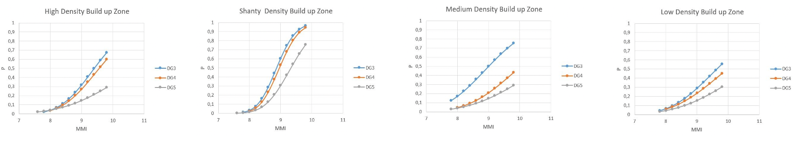

Damage Equations
We modelled fragility equations which is used to quantify the extent of damage at a given location given the spectral displacement due to the quake at that location. This estimation can be used as an additional parameter to the path planning algorithm which can prioritize cells based on this estimation and also prune the generated synthetic samples. The damage state is estimated is classified according to European Macroseismic Scale (EMS-98) from DG1 to DG5. DG1 indicating negligible damage for a structure whereas DG5 indicating destruction. We were able to quantify the damage states for different zones based on structural density which is show in Figure below, we can infer that shanty zones are at a higher risk relative to others. This part of our work is a supplement and can be considered an experimental addition.
